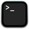
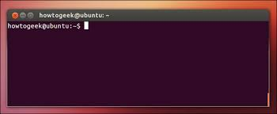
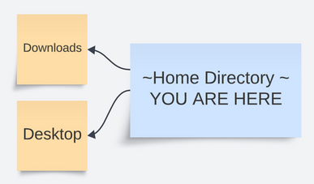
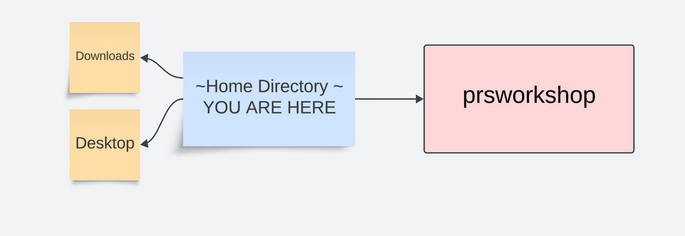

Setting up the Terminal 
Terminal programs allow you to navigate the Unix-Based OS, a simple system made up of files and folders. For this workshop, basic familiarity is required. Here we will go over setting up your terminal. If you are unfamiliar with the terminal afterwards it is recommended you complete our bash tutorial.
To begin open up a terminal window, by:
macOS:Searching for "terminal" on top toolbar, or going to Applications/Utilities/ and clicking the icon.Linux:Opening the lower left hand start menu, typing "terminal" and clicking on the icon.
Note: Users running Ubuntu in Windows can follow the Linux directions after double clicking the Ubuntu App icon to bring up the terminal
A window will open up that looks something like this:

Bash
Type:
cd ~
The cd command (learn more) stands for change directory, and ~ represents a shortcut to your "home" directory. After typing this command, you are "in" your home directory. Now type:
pwd
The pwd command returns your current "path", which represents the name and location of your home directory. Depending on your machine typing pwd from your home directory may return:
- /home/(your username) (most Linux environments)
- /Users/(your username) (older macOs, shared systems)
- Something else.
Because the name, location, and syntax differs from computer to computer, we use $HOME as a universal shortcut to represent your home directory.
The command ls (learn_more) lists the files and folders in your home directory. These files and folders in the home directory will differ from computer to computer, but most filesystems will have a Desktop and Downloads folder in the home directory:

Often the home directory of the filesystem can be quite crowded, which is why we would like to carry out this tutorial in a new directory specifically for the workshop. To create this directory, type:
mkdir prsworkshop
The mkdir command makes a new directory called prsworkshop that is located in your home directory:

Next we can move to this newly created directory by typing:
cd prsworkshop

Now we will create a file using the program nano by typing:
nano test.sh
This command will open up the nano text editor:

On the top line type:
echo "hello world"
Then save the file using Ctrl-O and press enter, and quit using Ctrl-X and pressing enter. Now type:
ls
Do you see the file you just created? To see the contents of the file you just created you can type:
cat test.sh
Do you know that the file you just created can also run as program? To execute the bash code that you have created you can type:
bash test.sh
Congratulations, you have now navigated the filesystem, created a directory, created a file and executed a program! You may feel like somewhat of an expert. However, if you still feel unfamiliar with shell scripting, please consider completing our longer bash tutorial. Otherwise, proceed to the next step, where you will install all system wide software necessary for the workshop.